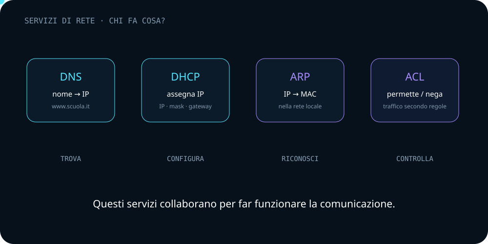

Quattro sigle.
Quattro problemi.
Il modo più semplice per capirle è partire dalla domanda a cui ciascun meccanismo risponde.
Qual è l'indirizzo?
Traduce nomi di dominio in indirizzi IP.
Come mi configuro?
Assegna automaticamente parametri di rete.
Chi possiede questo IP?
Associa IP e MAC nella rete locale IPv4.
Chi può passare?
Applica regole che permettono o negano traffico.
dns aiuta a isolare queste comunicazioni.
DNSNome → indirizzo IP
Quando scrivi un nome come www.esempio.it, il DNS aiuta a trovare l'indirizzo IP associato. È una specie di rubrica distribuita della rete.
DHCPConfigura automaticamente un host
Un client può ottenere automaticamente indirizzo IP, subnet mask, gateway e DNS. Il processo classico è spesso ricordato come DORA: Discover, Offer, Request, Acknowledge.
ARPIP → MAC nella LAN
Quando un host deve consegnare un frame a un dispositivo della rete locale, ARP permette di associare un indirizzo IPv4 al relativo indirizzo MAC.
ACLRegole sul traffico
Una Access Control List contiene regole che possono permettere o negare determinati flussi, in base a criteri come indirizzi, protocolli o porte.
Quale servizio ti serve?
Scegli uno scenario.